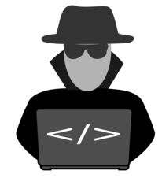
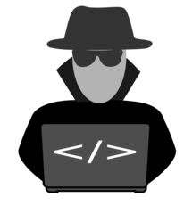
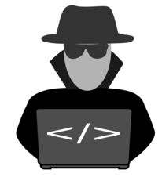
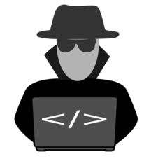

I am a cybersecurity proffesional with +5 experience in offensive security and red teaming.

Passionate for everything that has to do with hacking and finding vulnerabilities, specially in APIs and web applications. Continously learning to get into the bog bounty world, by developing new vulnerability identification skills.

Experience in working and leading big teams, focusing on red teaming and building attack strategies, to find weakness in the companies' cybersecurity posture. I am always happy to teach people and see how they improve and gain new hacking skills.
Like hacking ethically and practicing to help the world be more secure? I'll be happy to participate in new projects!
CONTACT ME